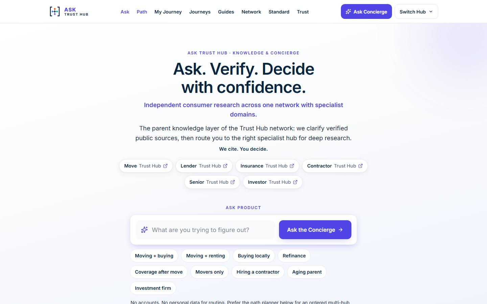
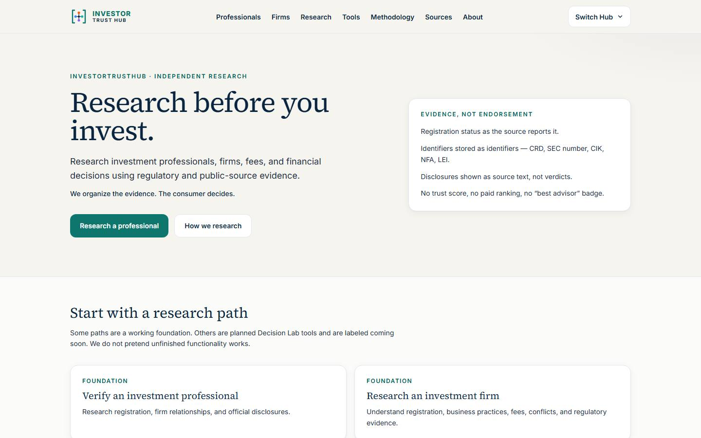
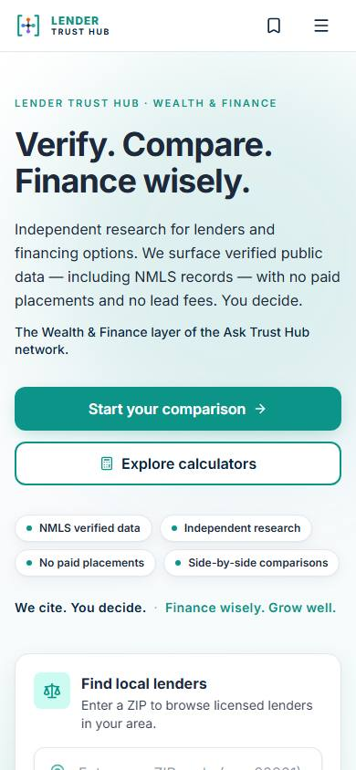

Same-scale proof that TRUSTHUB_VISUAL_STANDARD_V1 is a three-Hub OS. Measurements at 1440.
| Measurement | Ask | Investor | Lender | Delta |
|---|---|---|---|---|
| Header height | 69 | 69 | 69 | 0 |
| Mark optical | 36 @ (144,16) | 36 @ (144,16) | 36 @ (144,16) | 0 |
| Logo left edge | 144 | 144 | 144 | 0 |
| Switch Hub | 44×129 @ x=1167 | 44×129 @ x=1167 | 44×129 @ x=1167 | 0 |
| Overflow | 0 | 0 | 0 | 0 |





Stable: header height, mark height, logo left edge, Switch Hub geometry, shell edge.
Changed: wordmark, accent, Lender terminology, My Lending, teal personality, no stacked network bar.